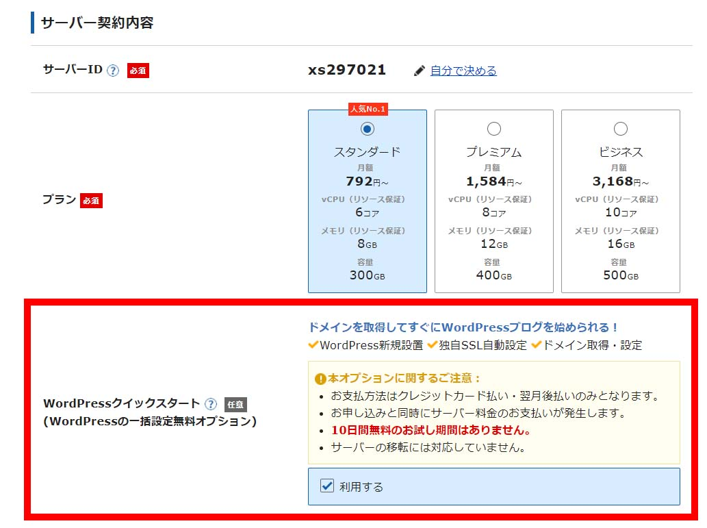
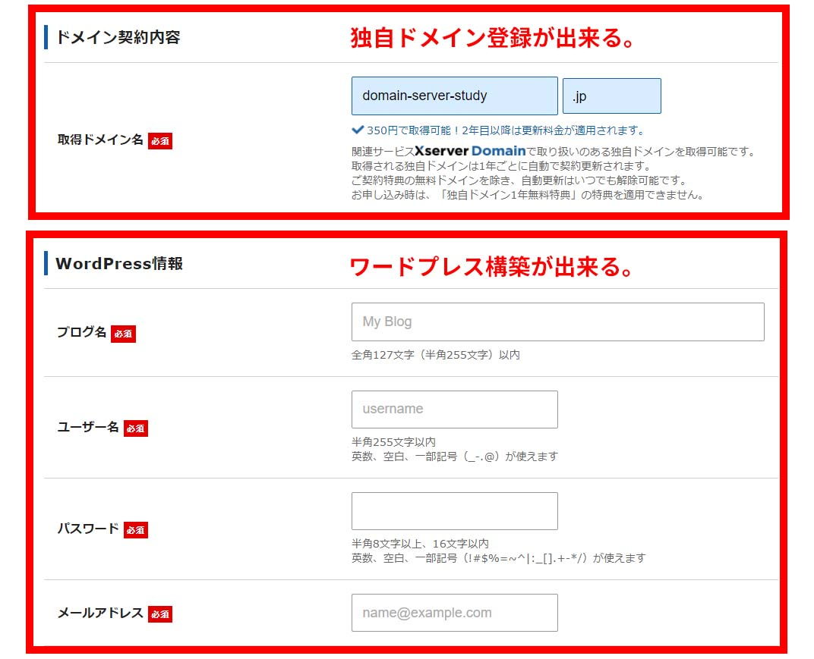
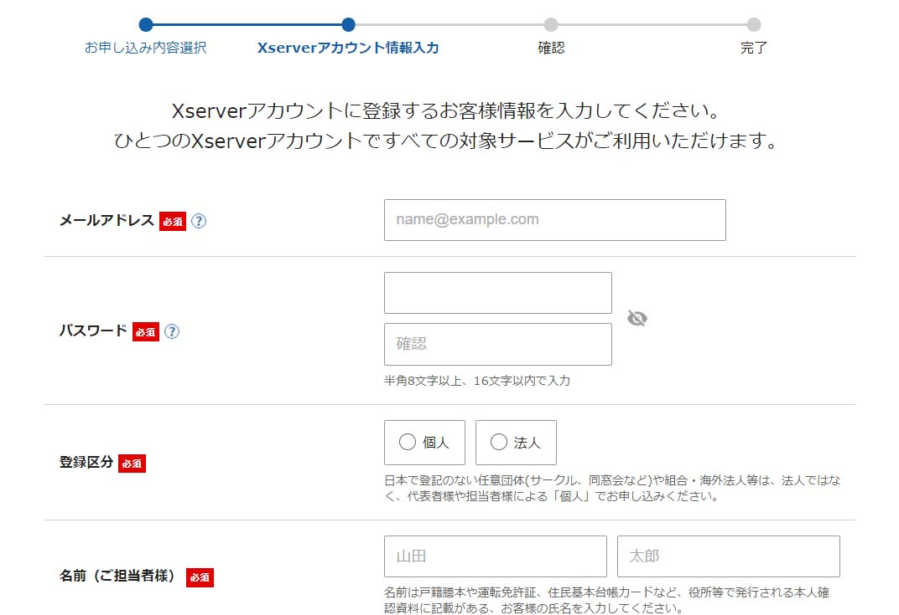

このページではワードプレスを初めて始める人にむけて「ワードプレスとは？」「ワードプレスの作り方」について、わかりやすく解説しています。
ワードプレスに興味がある方、これから始めてみようと考えている方に適した内容になっています。
CMSと呼ばれる簡単にホームページが作れるシステムになります。レンタルサーバー料金はかかりますが、システム自体は無料で利用できます。 日本では1番人気があって、CMSでは最もシェアを持っています。
記事を作るのが得意で記事の量産やSEOによる検索エンジンの対策に向いています。 テーマと呼ばれるテンプレートがあって、デザインや編集もテーマを選ぶだけで簡単に作ることが出来ます。
誰でも構築できる点。ページも簡単に増やせる点。SEOに強い点が受け入れられて人気になっています。
ワードプレス自体は無料になりますが、データを保存するレンタルサーバーと、独自ドメインが必要になります。 低価格サーバーを選べば年間で5,000円ほど。人気のレンタルサーバーであれば年間15,000円ほどの費用で作ることが出来ます。
レンタルサーバーと独自ドメインを契約することでワードプレスが作れます。
今ではレンタルサーバーの機能に「簡単セットアップ」機能がついているため、「ブログ名」「メールアドレス」「パスワード」など簡単な記入事項を入れるだけで 作ることが出来ます。
初めての方でも速ければ10分～30分ぐらいで作ることが出来るでしょう。
ブロックエディタと呼ばれる編集画面で記事を作ります。このブロックエディタに慣れるまで時間がかかります。
デザイン性のある見出しや枠を作る場合はHTMLの知識が要ります。テーマと呼ばれるデザインのひな形がありますが、 有料テーマだとデザインに凝った見出しや枠を、簡単に設置できるテーマもあります。
テーマやプラグインの種類が多く、どんなテーマがあるのか、どんなプラグインがあるのか勉強するのに時間がかかります。 またテーマの使い方やプラグインの使い方を勉強するのにも時間がかかります。
ワードプレス自体は簡単に構築できますが、そこからちゃんと運営しようとする場合は学習コストがかかります。
最低限のワードプレスの知識をつけた所で、実際にワードプレスを作っていきたいと思います。
ワードプレスを作るには「エックスサーバー」や「ConohaWING」で契約してクイックスタートで作っていきます。 この2社を紹介しているのは現在もっとも人気のある2社で、2社ともクイックスタートのサービスを実施しているから他なりません（エックスサーバーが220万サイト。ConohaWINGが45万アカウント）
他にもレンタルサーバー会社は沢山ありますが、このページでは2社に限定して説明を進めていきます。
クイックスタートとはレンタルサーバーの契約と一緒に「ドメイン登録」をしてくれて「ワードプレスのクイック構築」もしてくれるサービスになります。
難しいネームサーバー設定や、ドメイン会社で別途ドメインを登録してなくて良いため、簡易的にワードプレスが作れるようになります。
実際にエックスサーバーのクイック構築について説明していきます。エックスサーバーの申込みを行うと次の画面になります。
エックスサーバーの契約画面（クイックスタート申込み） 
クイックスタートではレンタルサーバー契約と同時に独自ドメインを登録します。これによりネームサーバー設定が省かれるメリットがあります。
ただし、独自ドメインについてはお名前ドメインのサービスが最もよくて、支払い期限をハガキで知らせてくれたりドメインチェック機能があったりします。 サービス内容を把握して、どうしてもお名前ドメインが良い場合はお名前ドメインでドメイン登録をして、自分でネームサーバー設定をしましょう。
ドメイン登録が終わったら、次にワードプレスのクイック構築を行います。ここでは「ブログ名」「ユーザー名」「パスワード」「メールアドレス」を 入れるだけでワードプレスが構築できます。
エックスサーバーの契約画面（ワードプレス作成） 
「ドメイン登録」」と「ワードプレスクイックスタート」が完了したら次はレンタルサーバー契約のために氏名、電話番号、メールアドレス、クレジットカードなど自分の情報を入れていきます。
エックスサーバーの契約画面（登録情報） 
次にサーバー登録するための個性情報を入れていきます。氏名、電話番号、決済情報などを入れていきましょう。
ここまでの登録で無事に作成が完了します。サイトURLとログイン用URLをお気に入り登録するなどして保存しておきましょう。
情報記入が終わったらレンタルサーバーの契約と同時にワードプレスが出来上がっています。 ログインURLに入って管理画面から操作してみましょう。
ここからは実際に管理画面に入って初期設定の行い方について説明をしていきます。
ワードプレスのデザインテーマ選びはサイトのデザインや方向性を決める上で最も重要な設定と言えます。
テーマは無料のものや有料のものなど実に様々あって、これまでに作られたテーマは8,000種類はあると言われています。 基本的には海外テーマのものが多くなっていますが、日本のテーマも人気になっています。
パーマリンク設定とはブログの記事URLを決める法則についての設定になります。
設定についてはワードプレスを作りながら後日変更することもできます。サイトアドレスやパーマリンクは最初に決めておきたい設定になりますが、 5記事～10記事までぐらいであれば、それまでに考えて変更しておけば問題ないと思います。

demiglaze
Web制作を始めて約19年になります（HTML/css、Photoshop、Webマーケティング）。2005年から当サイトの運営を開始。 これまでに300個以上のドメインを取得、10社を超えるレンタルサーバーを利用してきました。